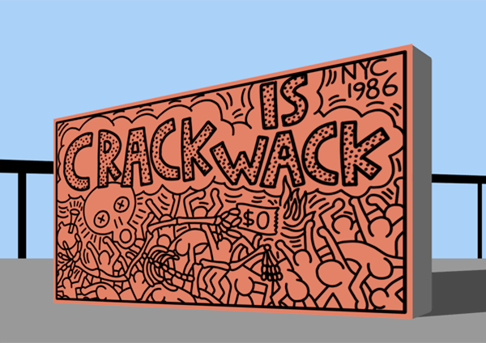
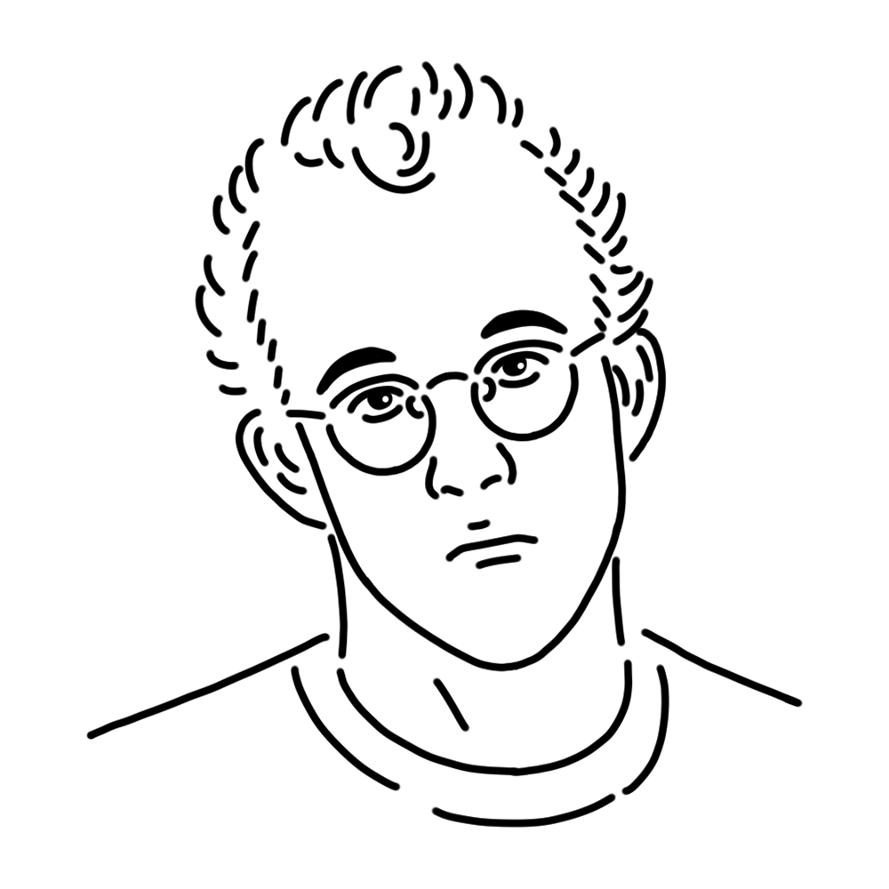

80年代アメリカのポップアート、ストリートアートを牽引したミューズ。底抜けに明るい性格とかわいらしい作風で親しまれているが、表現しているメッセージは極めて社会的でシビアなものだ。
アメリカ合衆国
"Crack is Wack"
"Todos Juntos Podemos Parar el SIDA"
"Radiant Baby" etc.

直訳すると「コカインはダサい」。蔓延するコカインと遅れる規制への抗議のため制作された壁画である。最初は無許可で描かれたためヘリングは器物損壊の罪で逮捕されてしまうが、市民からの抗議もあり減刑され、後に公園局から正式な制作依頼を受けるまでに至った。2012年に大規模な修復が行われている。
制作年
1986年
技法・材質
コンクリートの壁に塗料
寸法
約4.8 m x 7.9 ｍ
所蔵
マンハッタンのハンドボールコート（アメリカ）

1980年代ニューヨークを代表するポップアートの旗手。地下鉄の落書きからキャリアを始め、太い線と跳ねるようなキャラクターで一躍人気を集めた。明るくユーモラスな作風はTシャツなどに印刷され子どもから大人まで幅広く愛されているが、作品テーマは政治や社会への問題提起が主でとてもヘビーだ。ゲイを公言しており、エイズによって31歳の若さで逝去したが、そのアイコニックな人物像たちは今なお街角で踊り続けている。
Keith Allen Haring
1958年5月4日
1990年2月16日(31歳没)